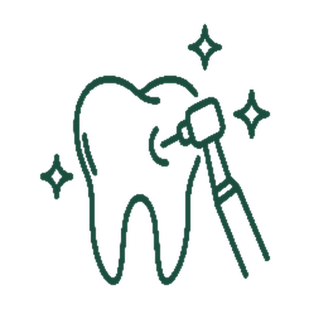

Restorative & Aesthetic Dentistry
Metal-free ceramics and nano-composites that invisibly repair chipped, decayed, or discoloured teeth.
Recreate Nature: Seamless, metal-free restorations for a functional, confident smile.
Moving away from dark metallic fillings, we use tissue-compatible ceramics and nano-composites that mimic natural enamel. With advanced digital shade-matching, our specialists seamlessly repair damaged teeth — invisible to the naked eye, with full chewing strength restored.
Specialised Modalities
- Composite Bonding & Invisible Fillings — conservative, single-visit repair of cavities, chips, and minor gaps using nano-hybrid composites matched to your tooth’s shade and texture.
FAQs
Will my composite fillings look artificial?
Not at all. Multi-layered shade matching replicates the natural colour variations from root to translucent edge, making restorations indistinguishable from surrounding teeth.
Do aesthetic restorations cause sensitivity?
Sensitivity is minimised or avoided through tissue-friendly dentin bonding systems and slow-curing light technology that eliminate micro-strains on the tooth’s nerve.